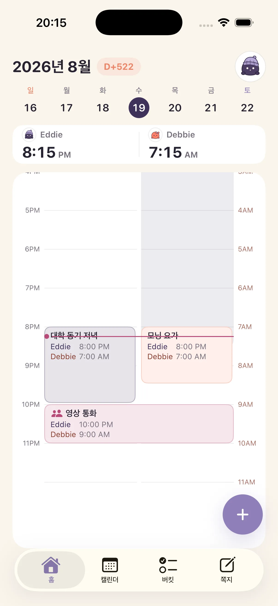
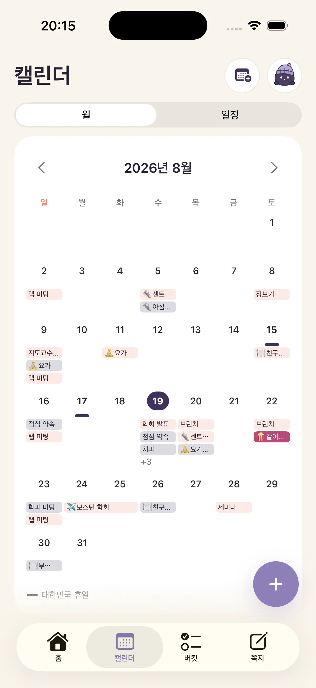
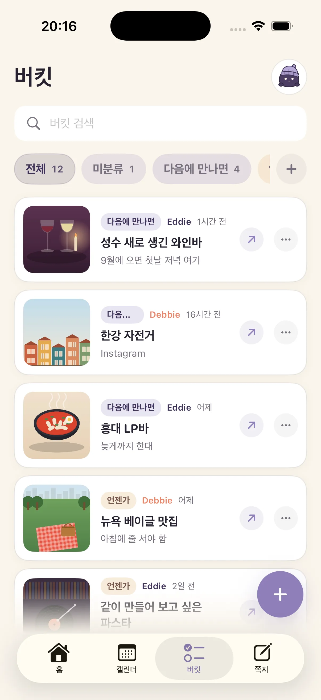
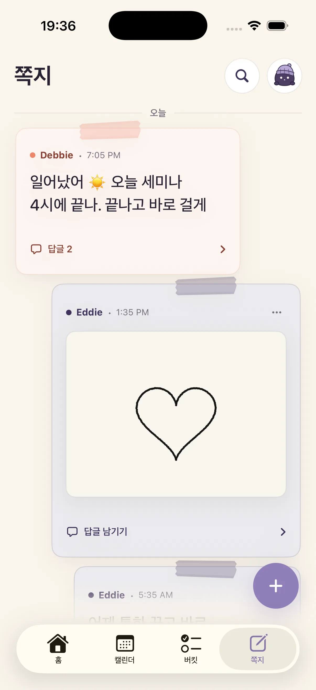

시간과 날씨
서로의 지금을 한 화면에 나란히.
Naru
함께 깨어 있는 시간을, 나루가 찾아줘요.
같이 있어도 좋지만 멀리 있을수록 더 필요해요.

ONE MOMENT, TWO DAYS
내 일정과 상대 일정을 각자의 현지 시간에 맞춰, 둘 다 비는 시간까지 한 화면에 보여줘요.
WHY WE MADE NARU
커플 앱은 몇 개 써봤는데,
결국 할 일이 하나 더 늘어난 거였어요.
한 사람의 퇴근은 다른 사람의 출근이 됐어요. “지금 전화해도 돼?”, “이번 주말 몇 시가 괜찮아?”를 매번 계산하고 묻는 대신, 우리가 이미 쓰던 캘린더로 서로의 하루를 볼 방법이 필요했어요. 그래서 Naru를 만들었습니다.
멀리 있을 때 특히 유용하고, 가까이 있는 날에도 둘의 일정과 기록은 그대로 이어져요.
01
THE PRESENT
자는 중인지, 일정 중인지, 둘 다 비는지. 위치 추적 없이 시간과 캘린더만으로 알 수 있어요.
서로의 지금을 한 화면에 나란히.
일정은 각자의 현지 시간에 정확히 맞춰요.
둘 다 깨어 있고 비는 구간을 찾아줘요.

03
THE THINGS YOU SHARE
외부 캘린더는 연결하고, 다음 데이트와 짧은 쪽지는 함께 쌓아요.
CALENDAR · 01
Naru는 사용자가 선택한 iPhone 캘린더와 Google Calendar 일정을 읽기 전용으로 가져와 Naru와 위젯에 표시해요. Google Calendar의 일정은 만들거나 수정하거나 삭제하지 않으며, 시차가 있어도 각자의 현지 시간에 맞춰 보여줘요.

COLLECTION · 02
YouTube·Instagram·사진 앱에서 공유하면 링크, 글과 사진이 한 리스트에 저장돼요. 담은 시간과 태그를 보고 검색한 뒤, 눌러서 사진과 원문을 크게 확인할 수 있어요. 둘이 50개까지 꼭 보고 싶은 것만 가볍게 모아요.

NOTES · 03
“회의 끝나면 10분만 통화?”, “집 도착하면 알려줘”처럼 답을 재촉하지 않는 쪽지를 남겨요.

NARU PLUS
파트너와 처음 연결하는 순간 모든 Plus 기능이 7일 동안 열려요. 카드 등록도 자동 결제도 없이, 둘이 실제로 써본 뒤 결정하세요.
7일 후에도 무료
처음 7일 모두 무료 · Naru Plus
체험이 끝나도 지난 일정과 둘이 쌓은 기록은 지워지지 않아요.
MADE FOR TWO
실시간 위치는 받지 않아요.
둘의 기록을 광고에 쓰지 않아요.
연결을 끊으면 공유도 바로 멈춰요.

TESTFLIGHT BETA
App Store 출시 전 TestFlight로 Naru를 먼저 쓸 수 있어요. 이름과 이메일을 남겨주시면 초대장을 보내드릴게요. 처음 연결하면 모든 Plus 기능이 7일간 열리고 자동 결제는 없어요.